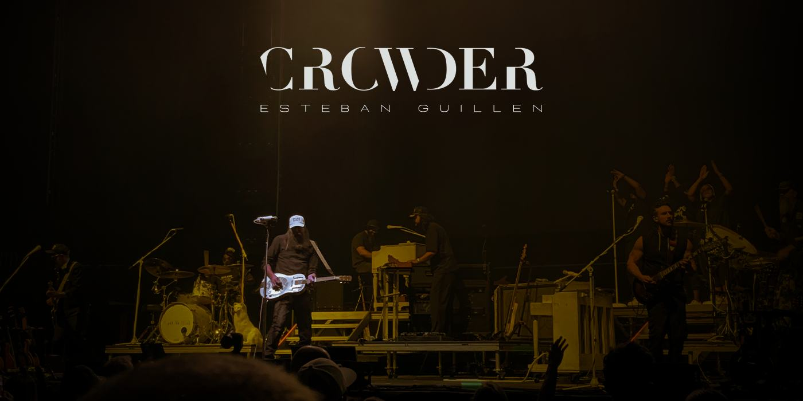
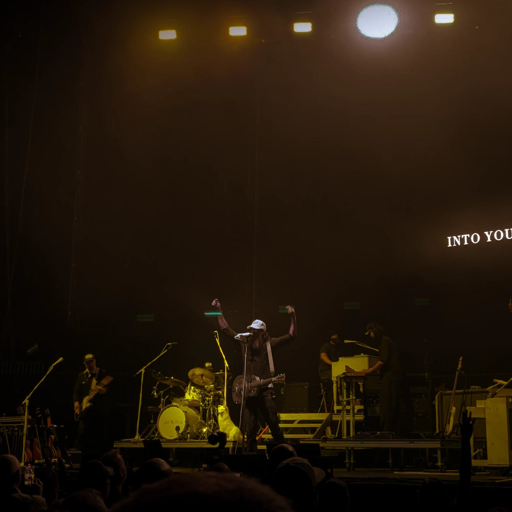
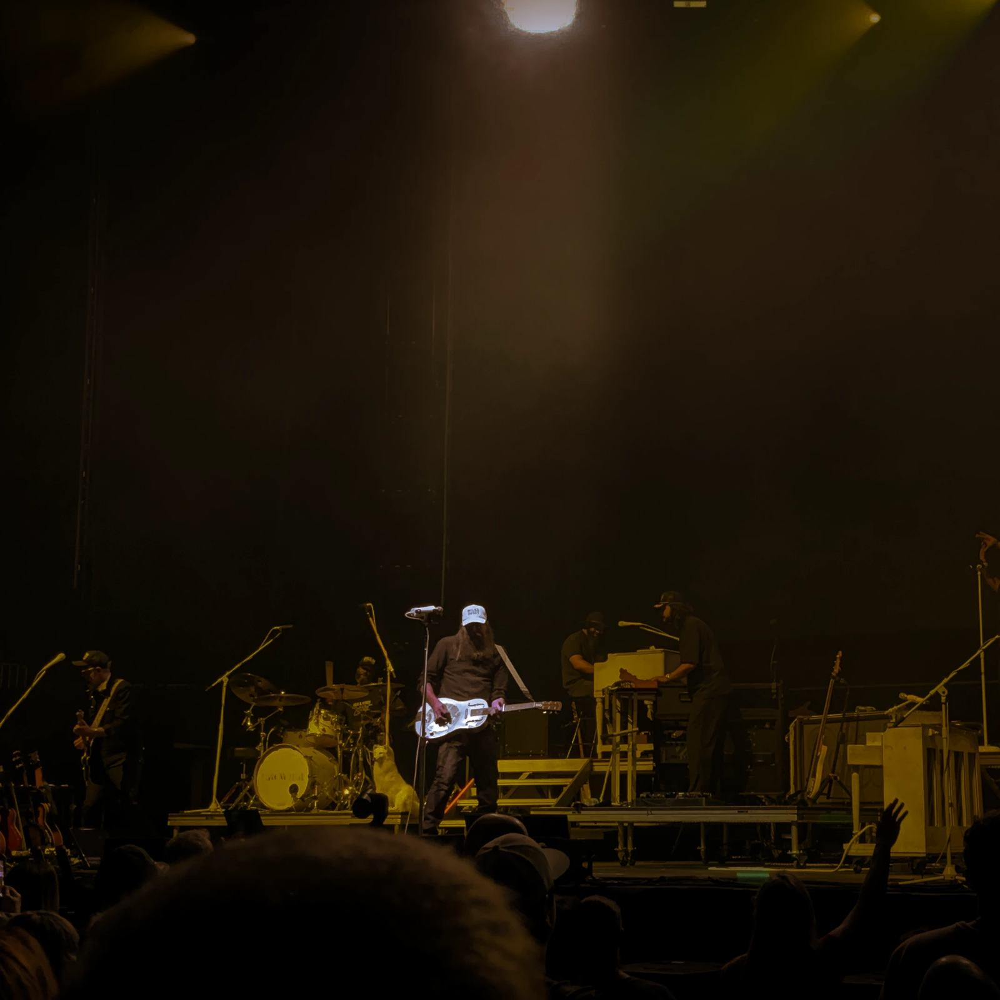

Índice / 04 / Fotografía en vivo
Crowder Live

Fotografía del concierto de Crowder.
La serie sigue los cambios de luz del show: ámbar, rojo, azul y un final en blanco y negro.
Las letras proyectadas en pantalla quedan dentro del encuadre y se vuelven parte de la foto.
- 22
- fotografías
- 4
- atmósferas de luz
- B/N
- cierre




